Identificarea alternativelor strategice
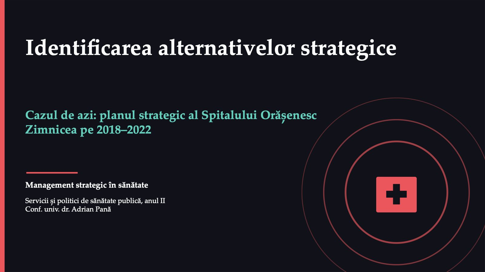
1 / 46Bună ziua. Azi nu lucrăm pe un spital imaginar. Lucrăm pe Spitalul Orășenesc Zimnicea, un spital public mic din sudul județului Teleorman, și pe planul lui strategic pentru 2018–2022. Planul este public, pe situl spitalului. Până la sfârșitul ședinței veți scrie o parte din planul lui următor.
Ce ar trebui să facă spitalul din Zimnicea în următorii ani?
2 / 46Întrebarea pare simplă: ce ar trebui să facă spitalul din Zimnicea în următorii ani? Primul lucru care vine în minte este, de obicei, că ar trebui să se modernizeze și să ofere servicii de calitate. Așa ceva nu este o alternativă strategică: nu spune ce se face, cu ce bani și la ce se renunță. Ne întoarcem la întrebare la sfârșit.
Rolul vostru: comitetul director
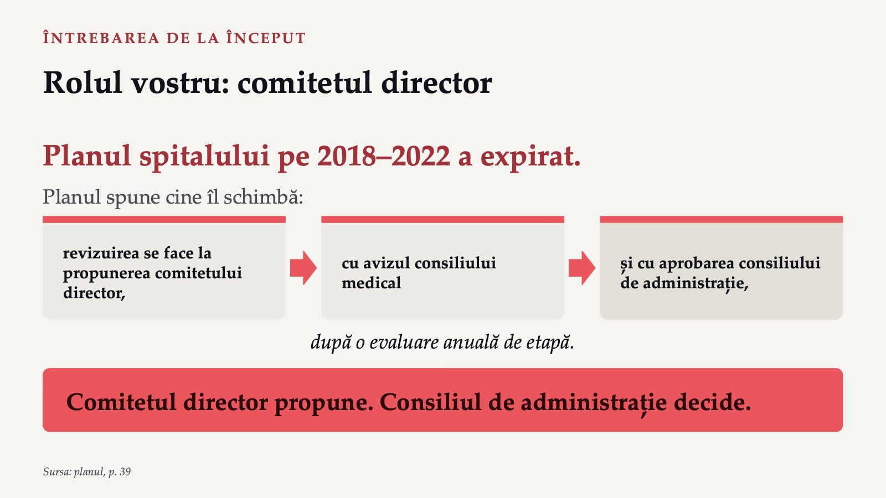
3 / 46Rolul pe care îl jucați azi nu este inventat. Chiar planul spitalului spune cine îl schimbă: comitetul director propune revizuirea, consiliul medical o avizează, consiliul de administrație o aprobă. Echipa voastră de la seminar este azi comitetul director care pregătește planul următor. La sfârșit veți fi, pentru câteva clipe, în locul celor care decid.
De unde pornim
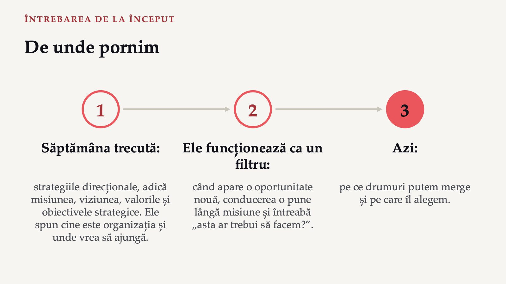
4 / 46Săptămâna trecută am lucrat cu misiunea, viziunea, valorile și obiectivele. Ele spun unde vrea să ajungă organizația și funcționează ca un filtru pentru orice idee nouă. Azi mergem un pas mai departe: dacă știm unde vrem să ajungem, ce drumuri avem și pe care îl alegem?
Fișa spitalului (1): ce fel de spital este
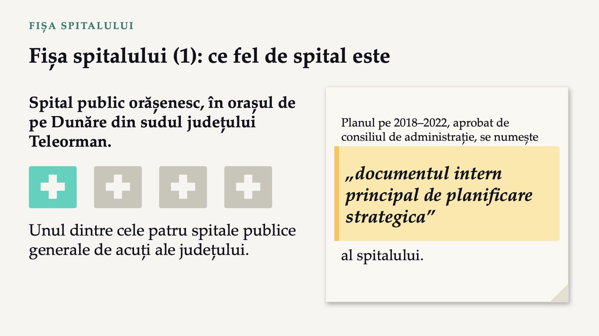
5 / 46Fișa pe care ați citit-o în Pregătire adună numai cifre din documente oficiale: planul spitalului și aplicația casei de asigurări pentru spitalele publice. Spitalul din Zimnicea este unul dintre cele patru spitale publice generale de acuți din Teleorman. Planul lui se descrie singur drept documentul principal de planificare strategică al spitalului.
124
![FIȘA SPITALULUI Fișa spitalului (2): paturile și ambulatoriul, după planul din 2018 124 de paturi în structură: medicină internă 40; medicină internă cronici 20; chirurgie generală 25, din care oftalmologie 6; anestezie și terapie intensivă (ATI) 4; pediatrie 20; obstetrică-ginecologie 15, din care neonatologie 4. medicină internă 40 chirurgie generală 25 medicină internă cronici 20 pediatrie 20 obstetrică-ginecologie 15 ATI 4 Ambulatoriul de specialitate: 9 cabinete în structura aprobată, dintre care funcționau doar 2, din cauza lipsei de personal medical. Sursa: Strategia de dezvoltare a spitalului, 2018–2022](diapozitive/C07/006.jpg) 6 / 46
6 / 46Planul din 2018 descrie un spital cu 124 de paturi și cu secțiile obișnuite ale unui spital orășenesc. Rețineți rândul despre ambulatoriu: din 9 cabinete aprobate funcționau doar 2, din cauza lipsei de personal medical. Vom reveni la acest rând de mai multe ori.
Fișa spitalului (3): oamenii și distanțele
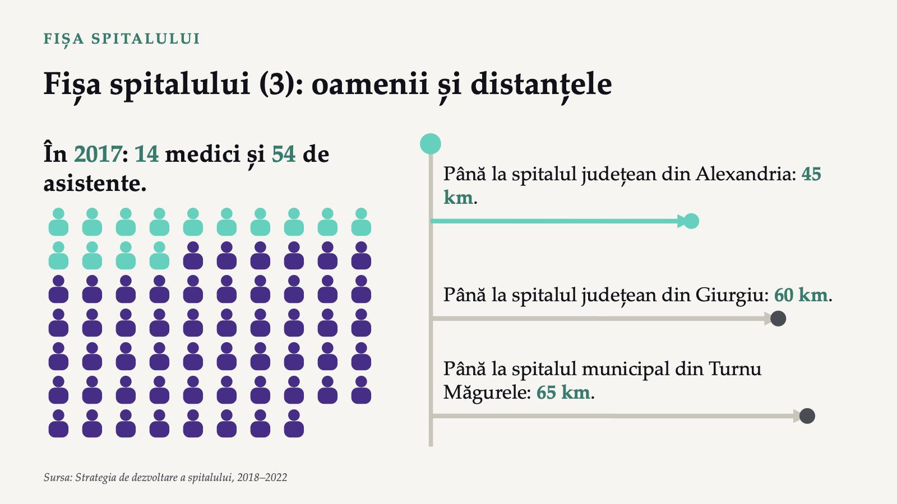
7 / 46În 2017, spitalul avea 14 medici. Cel mai apropiat spital județean, cel din Alexandria, este la 45 de kilometri. Pentru pacienții din oraș și din comunele din jur, distanțele acestea contează în orice variantă pe care o veți scrie.
0,93,
 8 / 46
8 / 46Acestea sunt cele mai recente date, pentru 2025, din aplicația CNAS pentru spitalele publice. Spitalul a avut 3 488 de cazuri de acuți confirmate. Gradul de ocupare a paturilor de acuți a fost de 46,6%. Indicele de complexitate a cazurilor arată cât de complexe au fost, în medie, cazurile tratate, față de o valoare de referință egală cu 1.
46,6%:
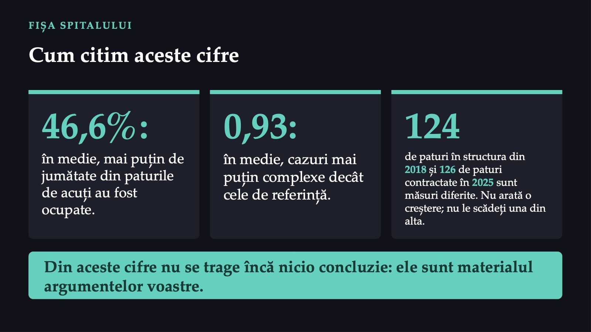
9 / 46Două lucruri despre cifre. Primul: un grad de ocupare de 46,6% înseamnă că, în medie, mai puțin de jumătate din paturile de acuți au fost ocupate, iar un indice de 0,93 înseamnă cazuri mai puțin complexe decât cele de referință. Al doilea: paturile din plan sunt paturile din structura aprobată, iar cele din aplicația CNAS sunt paturile contractate cu casa de asigurări. Sunt măsuri diferite. Nu trageți încă nicio concluzie; folosiți cifrele ca argumente.
Ce recunoaște planul singur
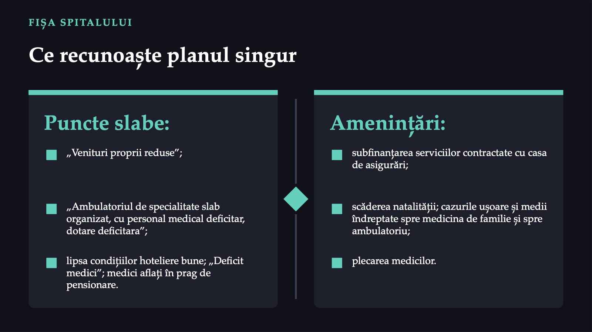
10 / 46Planul nu ascunde problemele. Le scrie el însuși, la punctele slabe și la amenințări: venituri proprii reduse, un ambulatoriu slab organizat, prea puțini medici, iar unii dintre ei aproape de pensie. Din afară vin subfinanțarea, scăderea natalității și plecarea medicilor. Orice variantă pe care o propuneți trebuie să treacă prin aceste rânduri.
alternativa strategică
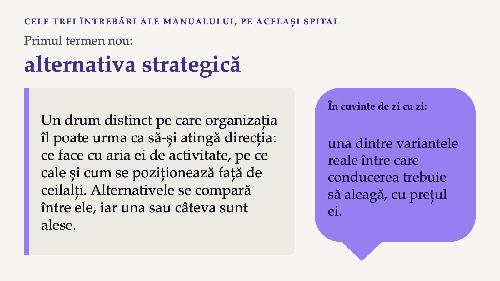
11 / 46Manualul pornește de la o observație a lui Peter Drucker: a înțelege și a lua în serios alternativele este primul pas al oricărei decizii. Cine nu caută alternative alege fără să știe că alege: face ce a mai făcut sau ce i se propune primul. O alternativă strategică este una dintre variantele reale între care conducerea trebuie să aleagă, cu prețul ei.
O alternativă strategică are trei trăsături
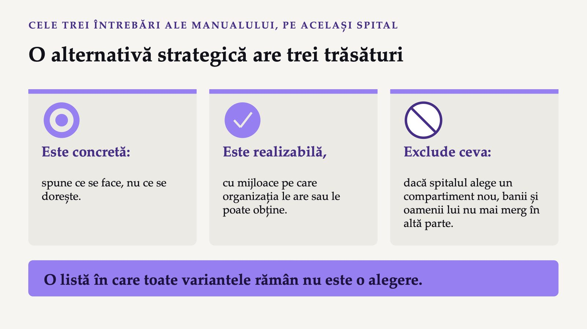
12 / 46Țineți minte trei trăsături: o alternativă este concretă, este realizabilă și exclude ceva. Ultima este cea mai des uitată. Dacă spitalul deschide un compartiment nou, oamenii și banii lui nu mai merg în altă parte. Un plan care le păstrează pe toate nu a ales nimic.
Trei întrebări, în această ordine
![CELE TREI ÎNTREBĂRI ALE MANUALULUI, PE ACELAȘI SPITAL Trei întrebări, în această ordine Ce facem cu aria noastră de activitate? O extindem, o restrângem sau o menținem: strategiile adaptative. Pe ce cale ajungem acolo? Cumpărăm, cooperăm cu alții sau dezvoltăm singuri; când restrângem, ieșim de pe piață: strategiile de intrare și de ieșire de pe piață. Cum ne poziționăm față de ceilalți? Postura și deosebirea prin cost sau prin ceva ce alții nu oferă, pe toată piața sau pe o parte a ei: strategiile competitive. Întâi direcția, apoi drumul. În practică, pașii se reiau.](diapozitive/C07/013.jpg) 13 / 46
13 / 46Manualul împarte munca în șase pași. Pentru azi rețineți trei întrebări, în ordinea aceasta. Ordinea are o logică: nu are sens să alegi între a cumpăra un cabinet și a-l deschide singur înainte să știi dacă vrei să te extinzi. Totuși, în practică, pașii se reiau. Dacă o cale de intrare se dovedește imposibilă, de pildă pentru că nu există un medic, comitetul se întoarce la alegerea alternativei.
strategiile adaptative
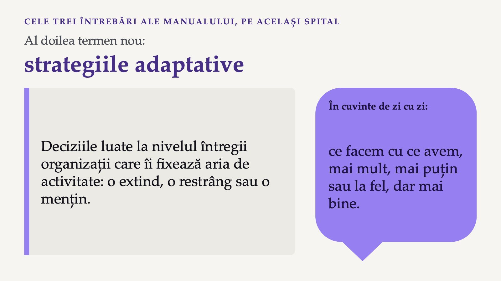
14 / 46Al doilea termen nou. Strategiile adaptative răspund la prima întrebare: ce facem cu aria noastră de activitate. Le luăm pe rând, pe același spital. Exemplele vin din planul din Zimnicea; încă nu discutăm dacă sunt bune. Fișa disciplinei numește extinderea, cu diversificarea, integrarea verticală și dezvoltarea pieței, apoi restrângerea și menținerea. Manualul adaugă la extindere dezvoltarea produsului și penetrarea pieței.
Extinderea (1): diversificarea și integrarea verticală
![CELE TREI ÎNTREBĂRI ALE MANUALULUI, PE ACELAȘI SPITAL Extinderea (1): diversificarea și integrarea verticală Diversificarea: servicii noi, înrudite sau neînrudite, în afara activității de bază. Pentru un spital orășenesc, îngrijirea la domiciliu ar fi aproape de ce face deja; un hotel pentru aparținători ar fi mai departe. Integrarea verticală: creșterea de-a lungul continuumului de îngrijire, spre furnizori (înapoi) sau spre pacienți (înainte): consultațiile în ambulatoriu, urmărirea după externare, recuperarea. Planul vede ca amenințare cazurile ușoare și medii îndreptate spre medicul de familie și spre ambulatoriu. Un ambulatoriu al spitalului cu mai multe cabinete ar ține pacientul în același lanț de îngrijire.](diapozitive/C07/015.jpg) 15 / 46
15 / 46Diversificarea adaugă servicii noi. Cu cât serviciul nou e mai departe de ce știe organizația să facă, cu atât îl conduce mai greu. Integrarea verticală înseamnă, pentru un spital, să preia îngrijirea dinaintea internării și de după ea. La Zimnicea, planul vede chiar ca amenințare faptul că pacienții ușori și medii sunt îndreptați spre medicul de familie și spre ambulatoriu.
Extinderea (2): piața, produsul, penetrarea
![CELE TREI ÎNTREBĂRI ALE MANUALULUI, PE ACELAȘI SPITAL Extinderea (2): piața, produsul, penetrarea Dezvoltarea pieței: aceleași servicii, pentru o piață nouă, geografică sau un grup nou de pacienți. De pildă, pacienții din comunele din jur, care altfel ar merge la Alexandria, la 45 km. Dezvoltarea produsului: servicii noi pentru aceeași populație. Planul trece printre oportunități un compartiment de oftalmologie în secția de chirurgie. Penetrarea pieței: aceleași servicii, pentru aceeași piață, mai bine. Cu 46,6% ocupare la paturile de acuți, spitalul are loc pentru pacienții care azi pleacă în altă parte.](diapozitive/C07/016.jpg) 16 / 46
16 / 46Trei forme de extindere, toate pe spitalul din Zimnicea. Dezvoltarea pieței ar aduce pacienți noi pentru serviciile existente. Dezvoltarea produsului ar aduce servicii noi pentru aceiași oameni, de pildă oftalmologia. Penetrarea pieței nu cere niciun serviciu nou: cere ca pacienții care pleacă azi în altă parte să rămână.
Restrângerea
![CELE TREI ÎNTREBĂRI ALE MANUALULUI, PE ACELAȘI SPITAL Restrângerea Dezinvestirea vinde o unitate care funcționează. Lichidarea o închide, prin vânzarea bunurilor ei. Recoltarea păstrează fără investiții noi o activitate în declin. Reducerea îngustează piața țintă, aria geografică, segmentele servite sau gama de servicii. În spitalul public: renunțarea la o specialitate fără medici, paturi de acuți transformate în paturi de cronici, mai puține paturi contractate. Restrângerea pe care n-a decis-o nimeni: 9 cabinete în structura aprobată, 2 în funcțiune, din lipsă de personal.](diapozitive/C07/017.jpg) 17 / 46
17 / 46În sectorul public, vânzarea unei secții este rară, dar restrângerea nu este. O restrângere se întoarce greu: un compartiment închis înseamnă oameni care pleacă și pacienți care învață drumul spre alt spital. Planul din Zimnicea arată și o restrângere pe care n-a decis-o nimeni: 9 cabinete aprobate, 2 în funcțiune. Comitetul director poate să o recunoască și să aleagă ce cabinete reface, sau poate să o lase să continue fără o decizie.
?
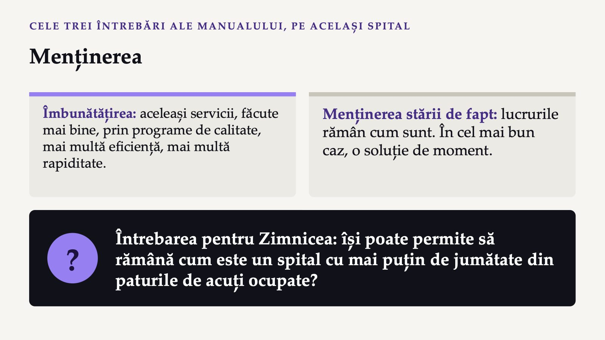
18 / 46Îmbunătățirea este frecventă în spitalele publice și are o justificare clară când spitalul nu are oameni pentru servicii noi. Menținerea stării de fapt este altceva: o organizație care nu schimbă nimic într-un mediu care se schimbă rămâne în urmă.
strategiile de intrare pe piață
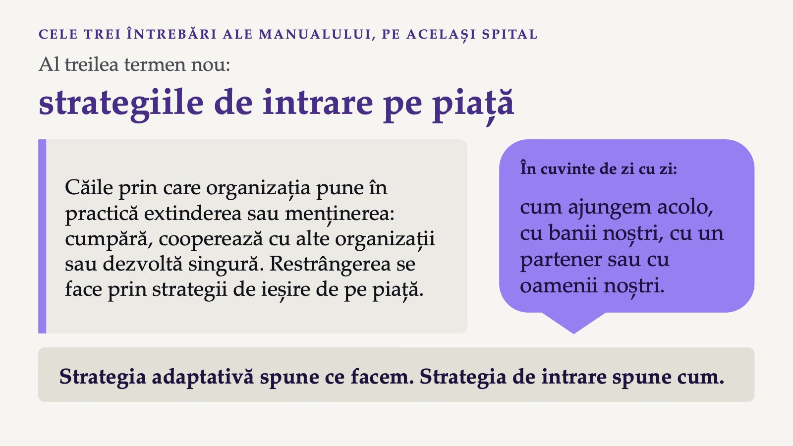
19 / 46Al treilea termen nou. Aceeași alternativă, de pildă un compartiment nou, poate fi pusă în practică pe căi foarte diferite, cu alt cost, alt risc și alt control.
Trei căi, fiecare cu prețul ei
![CELE TREI ÎNTREBĂRI ALE MANUALULUI, PE ACELAȘI SPITAL Trei căi, fiecare cu prețul ei Cumpărarea: achiziția unei organizații, o licență, capitalul de risc. Se intră repede pe piață, dar vine și cultura organizației cumpărate. Cooperarea: fuziunea, alianța, asocierea în participațiune. Riscul se împarte, dar și controlul. Dezvoltarea internă: serviciul se construiește cu oamenii și banii proprii. Controlul rămâne, dar cere timp și oameni. Ieșirea de pe piață: rapidă sau treptată, completă sau parțială.](diapozitive/C07/020.jpg) 20 / 46
20 / 46Fiecare cale are un preț în control, timp și risc. Cumpărarea e rapidă. Cooperarea împarte riscul. Dezvoltarea internă păstrează controlul, dar durează de obicei mult mai mult decât o achiziție și cere oameni pe care spitalul trebuie să-i aibă.
Calea, în planul din Zimnicea
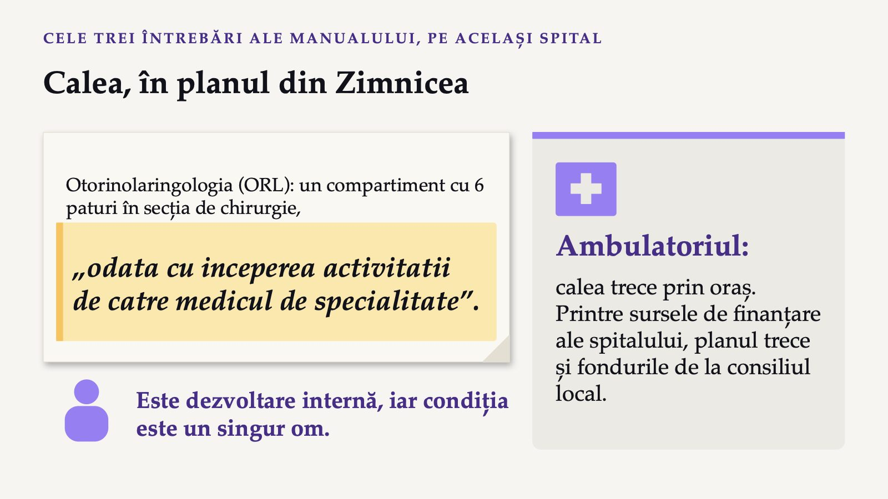
21 / 46Planul nu folosește acești termeni, dar arată cât de mult depinde o alternativă de calea ei. Varianta ORL depinde de un singur medic: fără el, compartimentul nu are cine să-l facă. La ambulatoriu, spitalul nu face singur; lucrează cu orașul.
Cum se poziționează spitalul: strategiile competitive
![CELE TREI ÎNTREBĂRI ALE MANUALULUI, PE ACELAȘI SPITAL Cum se poziționează spitalul: strategiile competitive Postura: apărătorul își apără segmentul de piață; prospectorul caută des oportunități noi; analizatorul păstrează ce are și preia repede ideile care par cele mai promițătoare; reactivul schimbă ceva mai ales sub presiunea mediului. Din documentele publice nu se poate spune ce postură are azi spitalul din Zimnicea. Poziționarea: diferențierea sau costul redus, pe toată piața sau pe un segment. Rezervele „in regim de plata” din plan sunt un exemplu de diferențiere pentru un segment: pacienții care vor și pot plăti pentru confort.](diapozitive/C07/022.jpg) 22 / 46
22 / 46Un spital aflat la 45 de kilometri de cel mai apropiat spital județean are, prin poziția lui, o piață de apărat. Dar postura nu se alege din hartă, iar din documentele publice nu putem spune ce postură are spitalul. La poziționare, un spital mic greu va avea costurile cele mai mici din județ în toate serviciile. Poate însă să fie singurul care oferă ceva aproape de casă.
Strategiile combinate și denumirile
![CELE TREI ÎNTREBĂRI ALE MANUALULUI, PE ACELAȘI SPITAL Strategiile combinate și denumirile O singură frază din plan leagă două mișcări: mai puține paturi finanțate, adică o restrângere venită din afară, și saloane cu 3–4 paturi, confort sporit și rezerve plătite. Același ambulatoriu cu mai multe cabinete poate fi integrare verticală, dezvoltarea produsului sau penetrarea pieței, după ce urmărește. Întrebați întâi ce urmărește alternativa. O decizie bună spune ce se oprește ca altceva să poată începe.](diapozitive/C07/023.jpg) 23 / 46
23 / 46Strategiile se combină, simultan sau pe etape: întâi o restrângere, apoi o extindere cu resursele eliberate. Planul din Zimnicea transformă o restrângere venită din afară într-o dezvoltare a produsului și într-o diferențiere pentru un segment. Nu căutați denumirea potrivită fără scop: același ambulatoriu are trei nume, după ce urmărește.
A
![COMITETUL DIRECTOR SCRIE Cele patru variante scrise de spital în 2018 A Oftalmologia: un compartiment în secția de chirurgie (planul, p. 20, la oportunități). B ORL: pe termen mediu, un compartiment cu 6 paturi în secția de chirurgie, odată cu începerea activității medicului de specialitate (p. 20). C Saloanele cu plată: saloane cu 3–4 paturi și confort hotelier sporit, inclusiv rezerve în regim de plată (p. 20). D Specialități noi în ambulatoriu, unde funcționau 2 din cele 9 cabinete aprobate (p. 21, la priorități).](diapozitive/C07/024.jpg) 24 / 46
24 / 46Acestea sunt cele patru variante pe care spitalul le-a scris în 2018, printre oportunități și priorități. Le luați așa cum le-a scris planul. Formularea exactă este pe diapozitivul următor și în pagina ședinței.
Cum le-a scris planul, cuvânt cu cuvânt (fără diacritice, ca în original)
![COMITETUL DIRECTOR SCRIE Cum le-a scris planul, cuvânt cu cuvânt (fără diacritice, ca în original) Sursa: Strategia de dezvoltare a spitalului, 2018–2022, p. 20 „posibilitatea de obtinere a schimbarii structurii organizatorice in sensul infiintarii unui compartiment de oftalmologie in cadrul sectiei chirurgie” (p. 20) „infiintarea, pe termen mediu, in cadrul sectiei de chirurgie a unui compartiment cu 6 paturi in specialitatea ORL, odata cu inceperea activitatii de catre medicul de specialitate” (p. 20) „crearea de saloane cu 3-4 paturi, cu confort hotelier sporit urmare a reducerii numarului de paturi finantate, inclusiv rezerve superdotate in regim de plata” (p. 20) „Dezvoltarea de noi specialitati in ambulatoriul integrat spitalului,care sa deserveasca populatia arondata acestuia” (p. 21)](diapozitive/C07/025.jpg) 25 / 46
25 / 46Așa arată textul original. Observați că varianta saloanelor pornește de la o reducere: paturile finanțate sunt mai puține. Iar varianta ORL are condiția scrisă chiar în frază.
Ce scrie comitetul director
![COMITETUL DIRECTOR SCRIE Ce scrie comitetul director Păstrați una dintre cele patru variante. Renunțați la una. Adăugați una a voastră. Pentru fiecare: un rând de argument și o cifră din fișa spitalului care îl susține. Pentru varianta păstrată și pentru cea adăugată: familia (extindere, restrângere sau menținere, cu forma ei) și calea (cumpărare, cooperare sau dezvoltare internă). Pentru cea la care renunțați: de ce nu mai merită. Pe telefon, o jumătate de pagină: „Alternativele strategice ale spitalului”, cu numele echipei. Aproximativ o jumătate de oră.](diapozitive/C07/026.jpg) 26 / 46
26 / 46Acum lucrați ca un comitet director. Păstrați o variantă, renunțați la una și adăugați una a voastră. Fiecare rând are un argument și o cifră din fișă. Nu există o combinație bună dinainte: există secțiuni bine argumentate și secțiuni care doar înșiră dorințe. Textul rămâne la echipă; cinci sau șase echipe îl vor citi apoi.
O formă de pornire, de completat
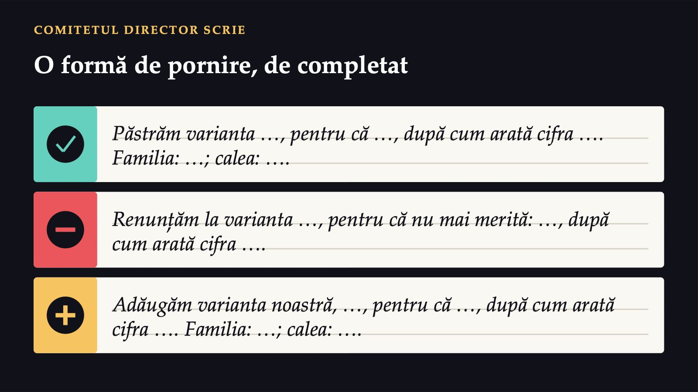
27 / 46Ca să nu porniți de la o pagină albă, aveți forma aceasta. Se vede cât de scurtă poate fi o secțiune: trei rânduri, fiecare cu argumentul și cifra lui.
Cifrele din fișă, la îndemână
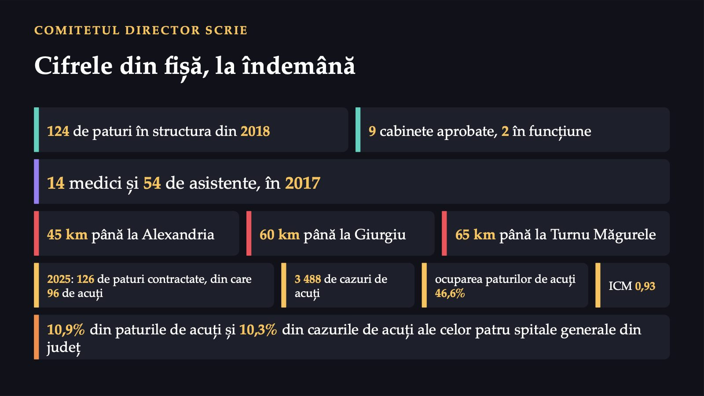
28 / 46Cifrele fișei rămân pe ecran cât lucrați. Alegeți cifra care chiar susține argumentul: o cifră pusă lângă un argument cu care nu are legătură nu îl întărește.
Comitetele citesc
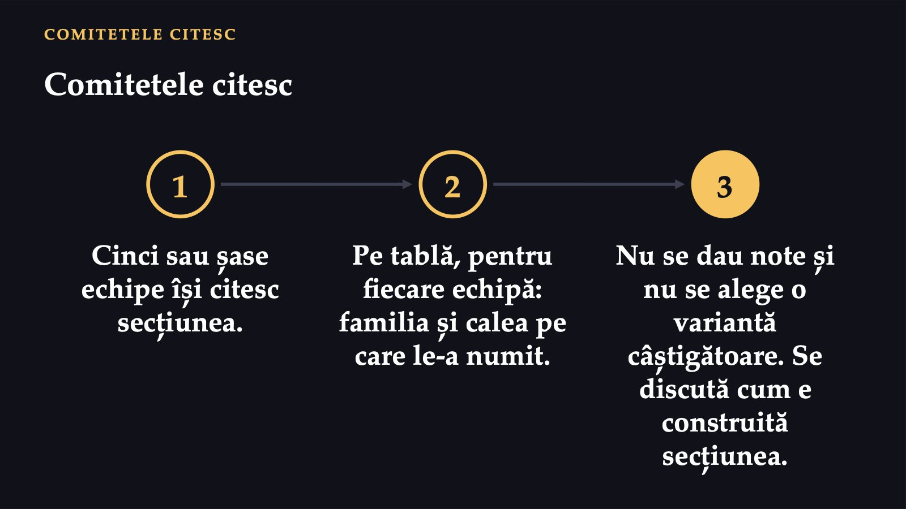
29 / 46Ascultăm cinci sau șase comitete. Pentru fiecare, notez pe tablă familia și calea pe care le-a numit echipa. Nu dau note și nu spun care variantă e bună. Ne uităm la cum e construită secțiunea: ce se face, cu ce cifră, pe ce cale și la ce se renunță.
Cum arată o secțiune bună
 30 / 46
30 / 46Acestea sunt criteriile după care discutăm textele, și sunt aceleași după care va fi judecat planul echipei voastre de la seminar. De pildă, cine scrie „extindere” pentru o variantă care renunță la ceva nu a înțeles alternativa. Iar o secție nouă cere și avizul Ministerului Sănătății.
Răspunsul apare după ședință
Răspunsul apare după ședință
Răspunsul apare după ședință
Răspunsul apare după ședință
Răspunsul apare după ședință
Răspunsul apare după ședință
Răspunsul apare după ședință
Răspunsul apare după ședință
Răspunsul apare după ședință
Răspunsul apare după ședință
Răspunsul apare după ședință
Răspunsul apare după ședință
Răspunsul apare după ședință
Răspunsul apare după ședință
Răspunsul apare după ședință
Răspunsul apare după ședință
Răspunsul apare după ședință
Răspunsul apare după ședință
Ce ați susține în consiliul de administrație?
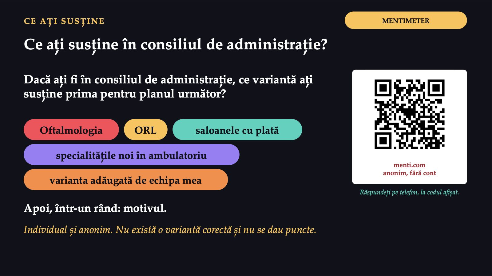
40 / 46Acum sunteți, pentru câteva clipe, în consiliul de administrație, printre cei care decid. Alegeți varianta pe care ați susține-o prima și scrieți, într-un rând, de ce. Fiecare alege singur și anonim. Nu există o variantă corectă și nu se dau puncte.
Motivele, nu numărul de voturi
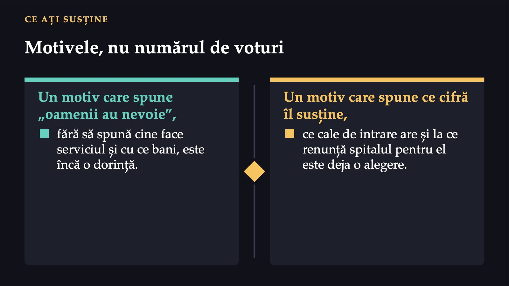
41 / 46Discuția de după vot nu caută varianta câștigătoare. Caută motivele care rezistă la cifrele din fișă. Un motiv fără oameni și fără bani este încă o dorință. Un motiv cu cifra lui, cu o cale de intrare și cu ce lasă spitalul deoparte este deja o alegere.
Răspunsul apare după ședință
Răspunsul apare după ședință
Ce rămâne după ședință
![CE RĂMÂNE ȘI CE URMEAZĂ Ce rămâne după ședință O alternativă strategică este un drum concret între care conducerea alege, cu prețul lui; o listă în care toate variantele rămân nu este o alegere. Strategiile adaptative: ce face organizația cu aria ei de activitate (o extinde, o restrânge sau o menține). Strategiile de intrare: pe ce cale (cumpărare, cooperare sau dezvoltare internă); restrângerea se face prin ieșire de pe piață. Strategiile competitive: postura și poziționarea (cost redus sau diferențiere, pe toată piața sau pe un segment). Într-un plan real, verificați ce a ajuns din analiză în obiective: o variantă fără activități, termen și responsabil a rămas o dorință.](diapozitive/C07/043.jpg) 43 / 46
43 / 46Cinci lucruri rămân după azi. Cel mai practic este ultimul: când citiți un plan, verificați ce a ajuns din analiză în obiective. O variantă fără activități, fără termen și fără responsabil a rămas o dorință.
Ce faceți diferit de acum
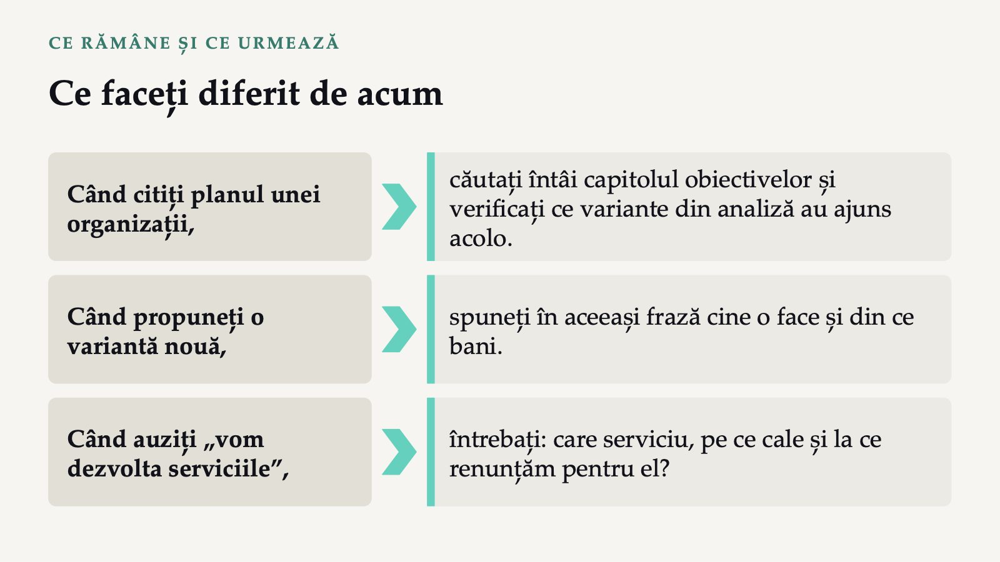
44 / 46Trei obiceiuri, pentru orice plan pe care îl veți citi sau scrie, inclusiv planul echipei voastre de la seminar.
Kahoot:
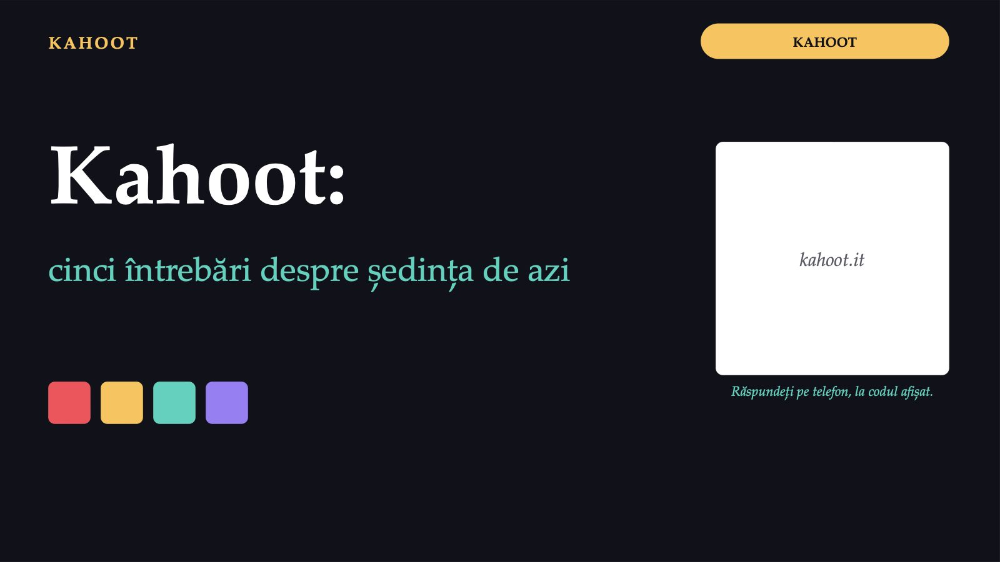
45 / 46Încheiem cu cinci întrebări pe telefon, din ce am lucrat azi. Puteți intra cu un pseudonim; rezultatul nu se notează.
Ce urmează
![CE RĂMÂNE ȘI CE URMEAZĂ Ce urmează 1 Seminarul de azi, după curs: lucrarea practică LP04, analiza internă, pe același spital din Zimnicea. Fișa echipei se predă până duminică, 29 noiembrie. 2 Cursul de luni viitoare: evaluarea alternativelor, cu analiza punctelor tari și slabe, a oportunităților și a amenințărilor. 3 Ce ați scris azi este materialul de pornire. Planul strategic al echipei, la sfârșitul semestrului, este judecat și după coerența dintre analiză, direcția strategică și alternativa aleasă.](diapozitive/C07/046.jpg) 46 / 46
46 / 46La seminarul de după curs rămânem la Zimnicea: verificați, punct cu punct, ce a scris spitalul despre el însuși. Luni viitoare trecem de la identificarea alternativelor la evaluarea lor. Alternativele pe care le-ați păstrat și le-ați adăugat azi vor fi judecate după criterii.
Săgeți sau spațiu: navigare · O: vedere de ansamblu · N: notele prezentatorului · F: ecran complet · Esc: închidere